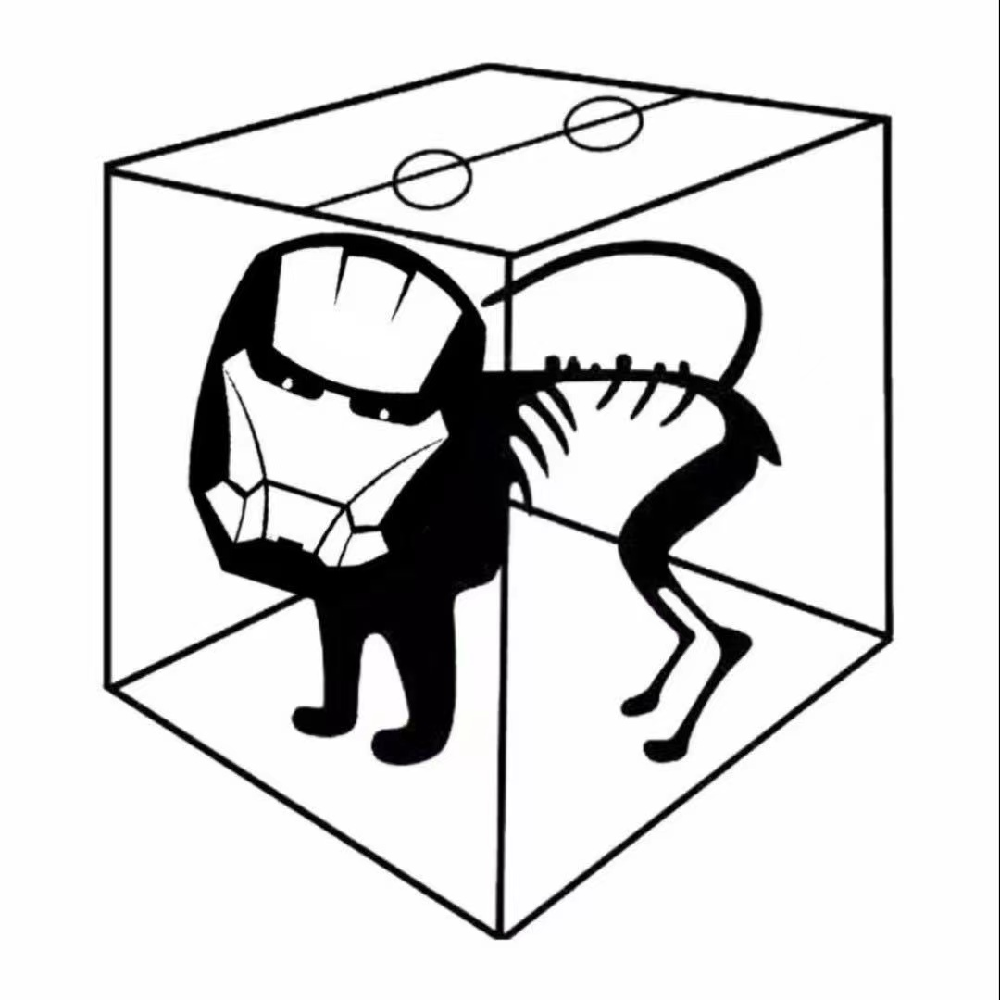

Markdown
Heading level 1
Heading level 2
text
bold text
italicized text
this is a quote
ordered list
- first item
- second item
- third item
unordered list
- first item
- second item
- third item
code
for i in range(10):
print(i)
for(int i=0; i<3; ++i)
printf('%d\n', i);
fenced code block
{
"firstName": "John",
"lastName": "Smith",
"age": 25
}
link
image

table
| syntax | description |
|---|---|
| header | title |
| paragraph | text |
footnote
Here's a sentence with a footnote. [^1]
[^1]: This is the footnote.
heading ID
My Great Heading {#custom-id}
definition list
term
: definition
strikethrough
~~The world is flat.~~
task list
- [x] write the press release
- [ ] update the website
- [ ] contact the media